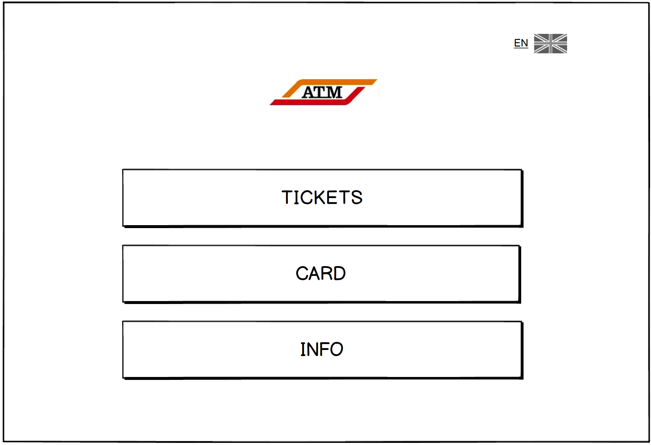
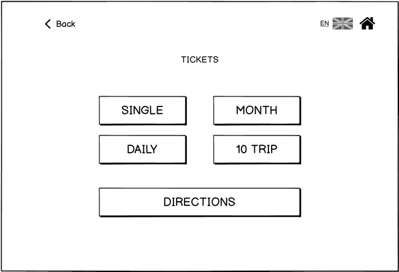
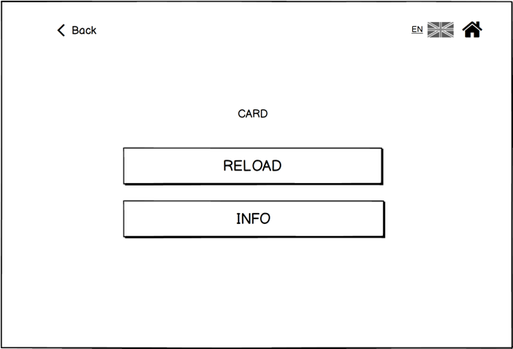
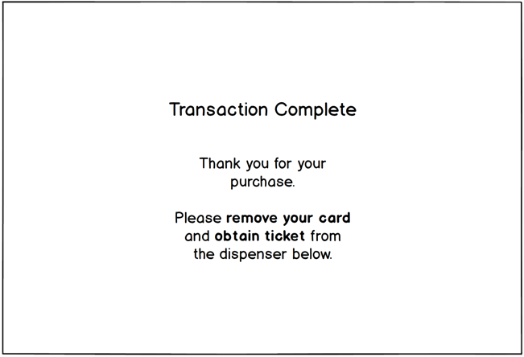

SPD: ATM Milan
- Role:UX Research & Design
- Context: Master's Project
- Date:February 2017
Project Overview
The objective was to review the ATM Milan Public Transportation Kiosk User Interface in order to make it more usable utilizing the best UX practices. Using the research gained from the Kiosk re-design, the ATM Web App must be analysed and re-designed.
Research & Analysis
We began our research process by compiling a list of the main features users would attempt to complete at the ATM Kiosks. From here, we went to the metro station and tried to complete these actions first hand and discovered many pain points and user gaps that currently exist. Current pain points include:
No available directions (have to search by zone, not by location).
Confusing terminology and language.
Overloaded of ticket options and information.
Lack of information when travelling with extra items.
Overall, a general lack of user empathy is the root of many issues and generates a large gulf of execution for users. Users know what they want to do, but aren't sure how to communicate these actions to the system.
Card Sorting Prioritisation

Along with our observations, our group conducted open card sorting interviews to form the basis of our navigational structure.
Confusing terminology, excessive actions, along with an unclear structure all lead to an overly complicated process. The card sorting prioritisation exercise combined with our findings in perceived user gaps, clearly illustrated to our group a need for a more efficient, simple and learnable system. The navigational structure of our kiosk was simplified into 3 groups:
- 1
Purchase & Reloading
- 2
General Information
- 3
Directions
The current ATM Kiosk UI is very confusing, and System 2 thinking is initiated almost immediately for first time users. By keeping the main screen as simple as possible along with everyday language, we sought to design a system that was extremely usable and created an automatic and effortless experience. Ultimately, this research lead our group to focus mainly on Efficiency & Learnability.
User Testing Insights & Iterations
After building our initial prototype, we sought feedback from users with other mental models, and generated explorative and direct user tasks to further improve our process.
Elements such as Purchasing Tickets, Travelling with additional Items, and Directions were directly tested, while other aspects of the process such as, payment options, basic navigation, as well as language options were indirectly tested to ensure our mental models didn't overlook simple user actions.
From our user testing interviews, we received valuable feedback which ultimately allowed us to re-evaluate our process and largely improve our existing flow.
Final ATM Kiosk Design
Home Screen
Our homepage was intentionally designed to be simplistic in order to increase efficiency and learnability. With 3 main CTA’s, users are able to quickly scan the screen and complete their desired action as quick as possible.
Purchasing Tickets
Tickets are no longer categorised by zone, rather by function. Users are able to purchase Single, Daily, 10 Trip & Monthly tickets from the terminal. This was intentionally done to reduce the amount of information users are required to know in order to effectively use our kiosk and to reduce ticket purchasing errors.
Directions
While our users didn’t have an issue understanding the directions from our initial prototype, they experienced difficultly in quickly assessing the best possible route. This lead to an improved visual hierarchy for our directions page to ensure the best route was always highlighted and was the first choice.
ATM Travel Card
Unlike the current ATM Kiosk, there is a home button for all Card type transactions. Currently, users are expected just to insert their cards without any prompts or directions. Instead of keeping this approach, we included a button within the home screen to reduce confusion and to increase efficiency. From this section, users are able to quickly reload their ATM cards, and obtain information pertaining to different ATM Card types (Student, Senior or Regular Card)
Transaction Summary & Ticket Purchase
Throughout the ticket purchasing process, users are provided with constant feedback that illustrates each action to minimize the gulf of evaluation. Prior to finalising transactions, users are always provided a transaction summary screen to ensure all tickets are correct and accounted for. This was intentionally included so users aren't required to remember chunks of information that the system already knows
Clearly marked "emergency exits" such as back, cancel and the home buttons are placed throughout the interface to encourage exploration while also giving the users the ability to undo unwanted actions.
Upon the completion of a transaction, users are notified of the successful action and are reminded to remove their card and obtain their ticket.